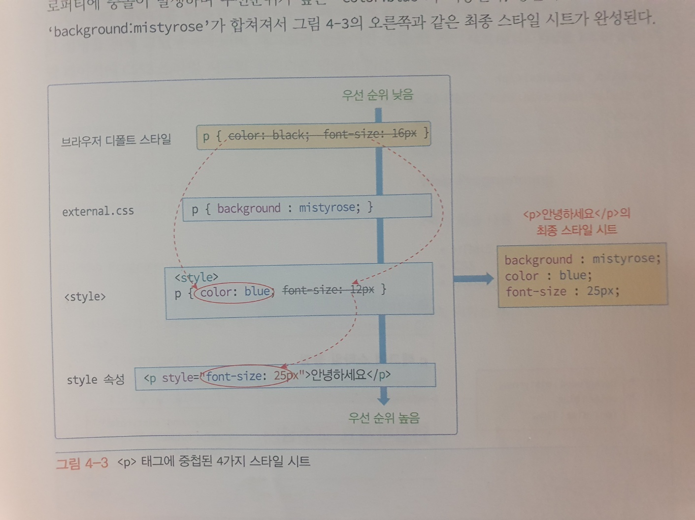

css스타일은 부모 태그로부터 상속된다.
안녕하세요
자식입니다
<p style="color: green;">
안녕하세요
<em style="font-size: 25px;">자식입니다</em>
</p>
'안녕하세요'의 p태그에 글자색을 바꾸는 css속성이 '자식입니다.'의 em태그에 상속된것을 볼 수 있다.
스타일 합치기(cascading)와 오버라이딩(overriding)
브라우저는 각 태그에 대한 디폴트 스타일 시트를 가지고 있어, 개발자가 만든 스타일이 없으면 이를 적용한다.
그러므로 각 태그에는 다음 4가지 종류 스타일 시트가 동시에 적용될 수 있다.
- 브라우저의 디폴트 스타일
- .css 스타일 시트 파일에 작성된 스타일
- style태그에 작성된 스타일
- style 속성에 작성된 스타일
스타일 합치기란 앞의 4가지 스타일 시트가 태그에 동시에 적용될 때 스타일이 합쳐져서 적용됨을 말한다.
하지만 여러 스타일 시트들이 하나의 태그에 중첩되어 충돌이 발생하기도 한다.
스타일 오버라이딩은 덮어쓰기로 동일한 프로퍼티에 서로 다른 값을 설정하는 충돌 시 우선순위가 높은 스타일을 적용하는 규칙이다.
